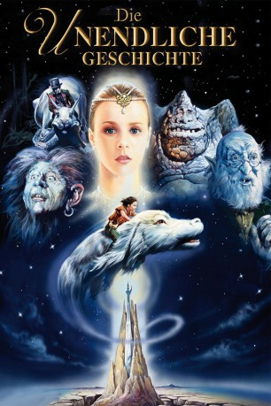
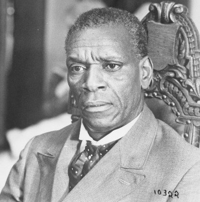

#1281 Die Unendliche Geschichte
Alternativ: The NeverEnding Story (Englischer Titel)
 
 IMDB-Wertung: 7.4 / 10
IMDB-Wertung: 7.4 / 10  Metascore: 46
Metascore: 46 
Der zehnjährige Bastian, ein Träumer und Bücherwurm, wird in der Schule immer wieder von seinen Mitschülern gequält. Als er eines Tages auf der Flucht in einem Antiquariat ein Buch namens "Die unendliche Geschichte" sieht, stiehlt er es, versteckt sich auf dem Dachboden seiner Schule und beginnt zu lesen: Das Land Phantasien wird von einem alles verschlingenden Nichts bedroht. Die Herrscherin von Phantasien, die kindliche Kaiserin, wählt den jungen Atreju aus, um nach einer Rettung zu suchen. Sein Weg führt ihn durch das Land der menschlichen Phantasie, doch er scheint seinem Ziel kaum näher zu kommen. Doch während er noch liest, fühlt Bastian plötzlich eine Verbindung zu Atreju und die Erkenntnis naht, daß er die Rettung des Landes sein könnte.
Jahr: 1984
Dauer: 102 Minuten
FSK: 6
Land: West-Deutschland Studio: Neue Constantin FilmTonspuren: DTS - ,
Untertitel:
Auflösung: 1080p (1920x800) Größe: 8458 MB
Genre: Drama, Abenteuer, Fantasy, Familie
Regisseur:  Wolfgang Petersen
Wolfgang Petersen
Drehbuch: Wolfgang Petersen, Herman Weigel, Michael Ende, Robert Easton
Soundtrack: Klaus Doldinger, Giorgio Moroder
Darsteller:
- Barret Oliver als Bastian
 Gerald McRaney als Bastian's Father
Gerald McRaney als Bastian's Father Deep Roy als Teeny Weeny
Deep Roy als Teeny Weeny-  Moses Gunn als Cairon
- Noah Hathaway als Atreyu
 Alan Oppenheimer als Rockbiter / Falkor / G'mork / Narrator
Alan Oppenheimer als Rockbiter / Falkor / G'mork / Narrator- Tami Stronach als The Childlike Empress
- Frank Lenart als Teeny Weeny , uncredited
- Chris Eastman als 1st Bully
- Darryl Cooksey als 2nd Bully
- Nicholas Gilbert als 3rd Bully
- Thomas Hill als Carl Conrad Coreander
- Tilo Prückner als Night Hob
- Sydney Bromley als Engywook
- Patricia Hayes als Urgl
- Beth Anderson als The 2nd Balladeer , uncredited
- Dee Harris als The Balladeers' Lead Guitarist , uncredited
- Limahl als The Balladeer , uncredited
- Heinz Reincke als Fuchur , uncredited
- Silvia Seidel als Fairy , uncredited
Datei: X:\3-Trilogie(N-Z)\Unendliche Geschichte\Unendliche Geschichte, Die (1984, FSK6, 1920x800).mkv seit 16.06.2015
Festplatte: HD Collection-3(N-Z)-6(A-Z)
 Alle Filme aus Gruppe '3-Trilogie(N-Z)\Unendliche Geschichte'
Alle Filme aus Gruppe '3-Trilogie(N-Z)\Unendliche Geschichte'